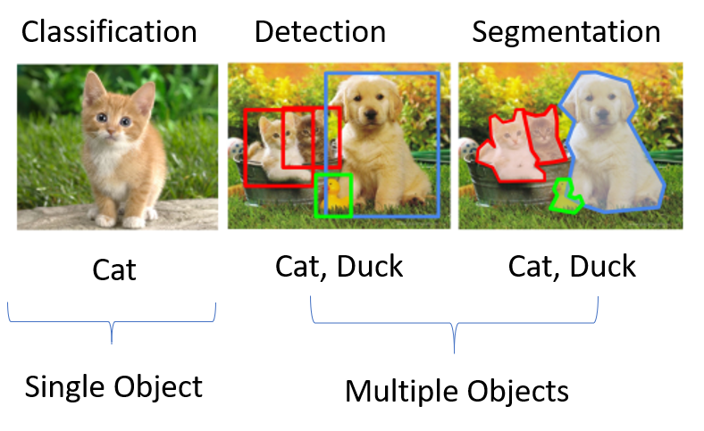
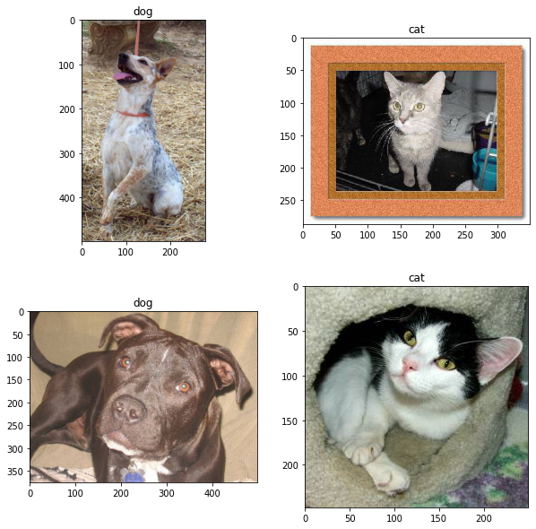
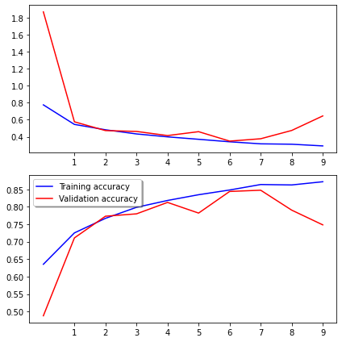
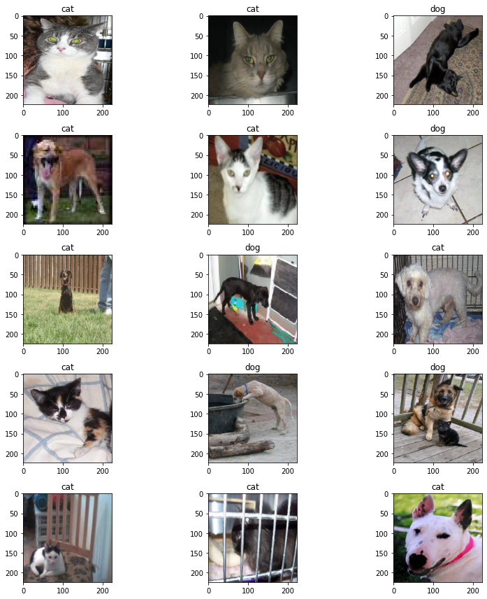

!ls ../input/dogs-vs-cats/
# the images are in a zip file in this foldersampleSubmission.csv test1.zip train.zipShubham Shinde
January 15, 2023
This was originally a notebook.
In a nutshell, CNNs are special deep learning architectures that have revolutionized the field of computer vision. Computer Vision is a field that is concerned about deriving information from images using computers. Some examples of computer vision include- Identifying whether a given image contains an item, like identifying a pedestrian in traffic, identifying cracks in an industrial machine, identifying if an X-Ray is abnormal. Self-Driving cars rely on computer vision algorithms, which are often CNNs. Filters on Instagram, face recognition systems, all use deep learning under the hood.
But some general types of computer vision problems are:

If you’re here, it probably means you’re familiar with basic machine learning concepts- like training data, predictions, feature engineering, etc. on tabular data. However image data is different from tabular data due to having a different structure, hence traditional algorithms like random forest cannot be used for classifying images.
This is where CNNs made the breakthrough, and achieved tremendous results on image data. Before CNNs, image analytics required a lot of feature engineering and pre-processing (tons of hand-made filters). CNNs outperformed all the traditional methods without requiring such feature engineering. CNNs learnt the features and filters by itself. All you had to do was feed a lot of data to the model.
CNN, that is, Convolutional Neural Networks are a subfield of neural networks, a family of algorithms. A neural network is a collection of nodes or neurons, where each neuron has a weight*. These weights are learnt during the training process such that the model is able to predict the output when input is given. When a lot of such neurons are stacked together, we get a neural network. A neural network with a lot of layers would be called deep neural network, a phenomenon which has driven majority of the AI success in the last decade.
In CNNs, the neurons are arranged and stacked in a manner suitable for images.
In CNN, we have filters (which are tiny 3x3 matrices) which “convolve” an image to get a transformed matrix. We won’t worry about the theory and filters here. All you need to know, that filters transform the image to a new matrix. This matrix is made smaller by a method called Pooling. These two operations create one Convolution Layer, and several such Layers create a CNN. This order isn’t mandatory, as we’ll see later.
This is a nice animation that showcases the convolution operation.
There’s a neat trick in deep learning called transfer learning- which is covered at the end of the notebook in case you make it.
That’s quite a lot of theory, on to the problem at hand.
The task at hand is an image classification task. You’re given a ton of images that are either a cat image or a dog image. Now, if you give a new image, you should be able to predict if it’s of a dog or a cat.
We are going to train a CNN to do this. Using the keras library.
Typically when you work on a CNN task, this is how your notebook flow will look like: Whatever time you spend with CNNs, it will be in one of these sections.
(collecting images itself can be either a herculean task or sometimes ready-made data is available, time and effort varies with dataset)
Difficulty Level: Varies Time Needed: Varies
(see how the images actually look like, what are the classes, how many of them.)
(in most libraries you need a guy that reads the images and feeds to the model, and does the intermediate work- batching, augmentation, split, multiprocessing, etc. configuring this step will be a good chunk of your time )
(how many CNN layers? How many filters, the optimizer, the loss function? this could be as easy as downloading/pasting an existing model in ten minutes, or the experiments could go on forever)
(now throw the dataloader function on the model and let it train. sit back and sip coffee.)
(here you actually use the model. for some task, or just to check if it’s doing good. evaluating whether the model is giving good predictions can also be challenging in some use cases.)
If you keep it simple, load pre-built modules, the model will work. But there could be many possible problems that might arise in the task. These will be covered at the end.
::: {.cell _cell_guid=‘b1076dfc-b9ad-4769-8c92-a6c4dae69d19’ _uuid=‘8f2839f25d086af736a60e9eeb907d3b93b6e0e5’ execution=‘{“iopub.execute_input”:“2023-01-07T11:37:46.774008Z”,“iopub.status.busy”:“2023-01-07T11:37:46.773068Z”,“iopub.status.idle”:“2023-01-07T11:37:52.956681Z”,“shell.execute_reply”:“2023-01-07T11:37:52.955647Z”}’ papermill=‘{“duration”:6.19509,“end_time”:“2023-01-07T11:37:52.959543”,“exception”:false,“start_time”:“2023-01-07T11:37:46.764453”,“status”:“completed”}’ tags=‘[]’ execution_count=1}
import numpy as np
import pandas as pd
from tensorflow.keras.preprocessing.image import ImageDataGenerator, load_img
from tensorflow.keras.utils import plot_model
from tensorflow.keras.utils import to_categorical
from sklearn.model_selection import train_test_split
import matplotlib.pyplot as plt
import random
import os
from PIL import Image
import glob:::
Extract the images from the zip file. Now there are two folders: train/ and test1/
import zipfile
with zipfile.ZipFile("../input/dogs-vs-cats/train.zip","r") as z:
z.extractall(".")
with zipfile.ZipFile("../input/dogs-vs-cats/test1.zip","r") as z:
z.extractall(".")
!ls /kaggle/working/__notebook__.ipynb test1 train['/kaggle/working/train/dog.8701.jpg',
'/kaggle/working/train/dog.9481.jpg',
'/kaggle/working/train/cat.104.jpg',
'/kaggle/working/train/cat.8800.jpg',
'/kaggle/working/train/dog.6199.jpg']You now notice that the label is encoded in the filename itself- cat or dog! We need to extract that to be able to train the model.
We are collecting each filename, and the corresponding label in a pandas dataframe (needed later)
train_files = glob.glob("/kaggle/working/train/*.jpg")
train_labels = [i.strip('/kaggle/working/train/')[:3] for i in train_files]
train_df = pd.DataFrame({'filename': train_files, 'class': train_labels})
train_df.head()| filename | class | |
|---|---|---|
| 0 | /kaggle/working/train/dog.8701.jpg | dog |
| 1 | /kaggle/working/train/dog.9481.jpg | dog |
| 2 | /kaggle/working/train/cat.104.jpg | cat |
| 3 | /kaggle/working/train/cat.8800.jpg | cat |
| 4 | /kaggle/working/train/dog.6199.jpg | dog |
First step is done- we have the images, and we have the labels. Let’s move to the second step.
We now observe what the images look like. We’ll look at four random images from the data.
fig, axs = plt.subplots(2, 2, figsize=(10,10))
axs = axs.ravel()
for i in range(0,4):
idx = random.choice(train_df.index)
axs[i].imshow(Image.open(train_df['filename'][idx]))
axs[i].set_title(train_df['class'][idx])
This is a pretty clean dataset- that’s good. The subjects of the image are in center, occupy a majority of the image, no blurriness or anything. (Ideally you’d look at more images than a dozen tho,:) )
You might’ve noticed that the dimensions of the images are not constant, they vary a lot. This will be a problem for the CNN- it expects images of a fixed size! How do we take care of it? We don’t, our data loader guy will do it for us.
(Well, sometimes we might want to do it ourselves, if we think the resizing needs extra attention- but in this case, we’ll let it be automated.)
Dataloaders are the unsung heroes of the CNN world- they take care of a lot of nasty work that would be a nightmare if we had to do it by hand. What they essentially do is simple- read the data from the disk, and feed to the model. But under the hood they take care of many things, like…
We are using keras’s ImageDataGenerator to create our training data loader.
Two steps:
ImageDataGenerator instance, and specify the augmentation strategies.In pytorch there’s torch.utils.data.Dataset andtorch.utils.data.DataLoader. Sometimes you may need to define a custom dataloader, but the default is good enough for most use cases.
train_datagen = ImageDataGenerator(
rotation_range=5,
rescale=1./255,
horizontal_flip=True,
shear_range=0.2,
zoom_range=0.2,
validation_split=0.2)
# create a image data generator object.
# all these are data augmentation parameters.
# now let's specify the image size to which each image will be resized to
img_height, img_width = 224, 224
batch_size = 64There are two ways to create data generators/loaders from above instance. I recommend going through the ImageDataGenerator API page, but the two methods are:
Train/
---| Dog/
---| Dog1.jpg
---| Dog1.jpg
---| Cat/
---| Cat1.jpg
---| Cat2.jpg
Val/
---| Dog/
---| Dog5.jpg
---| Dog6.jpg
---| Cat/
---| Cat7.jpg
---| Cat8.jpgSince we are using method1, we will not be rearranging the folders.
train_generator = train_datagen.flow_from_dataframe(
train_df,
target_size=(img_height, img_width),
batch_size=batch_size,
class_mode='categorical',
subset='training') # set as training data
# remember we put 0.2 validation split while defining ImageDataGenerator?
validation_generator = train_datagen.flow_from_dataframe(
train_df, # same directory as training data
target_size=(img_height, img_width),
batch_size=batch_size,
class_mode='categorical',
subset='validation') # set as validation data
print("Class Indices:", train_generator.class_indices)Found 20000 validated image filenames belonging to 2 classes.
Found 5000 validated image filenames belonging to 2 classes.
Class Indices: {'cat': 0, 'dog': 1}Now we come to the meaty part- defining the CNN network, the engine of our application. As we discussed earlier, we are going to define a series of Convolution Layers, and each convolution layer consists of a convolution operation followed by a max pool layer.
This order is not mandatory- you can have two Convolution operations followed by one max pool, or three, or an average pool- that’s the neat part of neural networks, they’re so adaptable and malleable, and the best configurations are often found out by trial and error. In this case, we are going with the wisdom of our elders, and go by this order.
As we apply more Conv Layers, you will get a transformed matrix of somesize x somesize. But what good is a matrix to us? We need a simple answer- 0 or 1! In order to get this answer, we “flatten” the final matrix to a single vector of size somesize-times-2 x 1. Then we pass it through more neural network neurons to get a single neuron at the end. This neuron’s output is constrained between 0 and 1. This is our final probability! If it’s greater than 0.5, the prediction is 1, if not, it’s 0.
If you have more than 2 classes, like predicting a digit. In this case, there would be ten neurons at the end. Each of their output would be the probability of that class.
Apart from number of Conv layers, there are other design choices while designing a CNN- they include selecting the optimizer, the learning rate, the loss function, the number of filters. For an introductory notebook, discussion on those is not necessary.
What’s important to note: passing the input shape to the first layer. Ensuring that the last layer corresponds to the number of classes.
Try tinkering with this configuration to see how the results change. Try using only one Conv Layer, reducing number of filters, increasing number of filters, etc.
from keras.models import Sequential
from keras.layers import Conv2D, MaxPooling2D, Dropout, Flatten, Dense, Activation, BatchNormalization
model = Sequential()
model.add(Conv2D(32, (3, 3), activation='relu',
input_shape=(img_width, img_height, 3)))
# 32 here means this layer will contain 32 filters of size 3x3 being learnt
model.add(BatchNormalization())
# batchnorm is a useful layer that helps in convergence
model.add(MaxPooling2D(pool_size=(2, 2)))
# maxpooling will reduce the size of the image
model.add(Dropout(0.25))
# dropout is used for regularization, ensuring that model doesn't overfit
model.add(Conv2D(64, (3, 3), activation='relu'))
model.add(BatchNormalization())
model.add(MaxPooling2D(pool_size=(2, 2)))
model.add(Dropout(0.25))
model.add(Conv2D(128, (3, 3), activation='relu'))
model.add(BatchNormalization())
model.add(MaxPooling2D(pool_size=(2, 2)))
model.add(Dropout(0.25))
# convolutional block is complete. now on to defining the "head"
# first flatten the matrix to get a single array
model.add(Flatten())
# adding a dense hidden layer of neurons
model.add(Dense(512, activation='relu'))
model.add(BatchNormalization())
model.add(Dropout(0.5))
# finally the output layer with neurons=number of classes and softmax activation
model.add(Dense(2, activation='softmax')) # 2 because we have cat and dog classes2023-01-07 11:38:12.212718: I tensorflow/stream_executor/cuda/cuda_gpu_executor.cc:937] successful NUMA node read from SysFS had negative value (-1), but there must be at least one NUMA node, so returning NUMA node zero
2023-01-07 11:38:12.342711: I tensorflow/stream_executor/cuda/cuda_gpu_executor.cc:937] successful NUMA node read from SysFS had negative value (-1), but there must be at least one NUMA node, so returning NUMA node zero
2023-01-07 11:38:12.343593: I tensorflow/stream_executor/cuda/cuda_gpu_executor.cc:937] successful NUMA node read from SysFS had negative value (-1), but there must be at least one NUMA node, so returning NUMA node zero
2023-01-07 11:38:12.345511: I tensorflow/core/platform/cpu_feature_guard.cc:142] This TensorFlow binary is optimized with oneAPI Deep Neural Network Library (oneDNN) to use the following CPU instructions in performance-critical operations: AVX2 AVX512F FMA
To enable them in other operations, rebuild TensorFlow with the appropriate compiler flags.
2023-01-07 11:38:12.345912: I tensorflow/stream_executor/cuda/cuda_gpu_executor.cc:937] successful NUMA node read from SysFS had negative value (-1), but there must be at least one NUMA node, so returning NUMA node zero
2023-01-07 11:38:12.346654: I tensorflow/stream_executor/cuda/cuda_gpu_executor.cc:937] successful NUMA node read from SysFS had negative value (-1), but there must be at least one NUMA node, so returning NUMA node zero
2023-01-07 11:38:12.347302: I tensorflow/stream_executor/cuda/cuda_gpu_executor.cc:937] successful NUMA node read from SysFS had negative value (-1), but there must be at least one NUMA node, so returning NUMA node zero
2023-01-07 11:38:14.495879: I tensorflow/stream_executor/cuda/cuda_gpu_executor.cc:937] successful NUMA node read from SysFS had negative value (-1), but there must be at least one NUMA node, so returning NUMA node zero
2023-01-07 11:38:14.496731: I tensorflow/stream_executor/cuda/cuda_gpu_executor.cc:937] successful NUMA node read from SysFS had negative value (-1), but there must be at least one NUMA node, so returning NUMA node zero
2023-01-07 11:38:14.497497: I tensorflow/stream_executor/cuda/cuda_gpu_executor.cc:937] successful NUMA node read from SysFS had negative value (-1), but there must be at least one NUMA node, so returning NUMA node zero
2023-01-07 11:38:14.498130: I tensorflow/core/common_runtime/gpu/gpu_device.cc:1510] Created device /job:localhost/replica:0/task:0/device:GPU:0 with 15401 MB memory: -> device: 0, name: Tesla P100-PCIE-16GB, pci bus id: 0000:00:04.0, compute capability: 6.0Let’s visualize how our network looks like, and what the shapes of input and output at each layer.
The shapes of input and output can be useful for debugging. If there’s a mismatch between output of one layer and input of next, model will throw up error.
epochs=10
history = model.fit(
train_generator,
epochs=epochs,
validation_data=validation_generator,
)2023-01-07 11:38:16.953970: I tensorflow/compiler/mlir/mlir_graph_optimization_pass.cc:185] None of the MLIR Optimization Passes are enabled (registered 2)Epoch 1/102023-01-07 11:38:20.190526: I tensorflow/stream_executor/cuda/cuda_dnn.cc:369] Loaded cuDNN version 8005313/313 [==============================] - 334s 1s/step - loss: 0.7747 - accuracy: 0.6353 - val_loss: 1.8673 - val_accuracy: 0.4876
Epoch 2/10
313/313 [==============================] - 324s 1s/step - loss: 0.5450 - accuracy: 0.7254 - val_loss: 0.5757 - val_accuracy: 0.7110
Epoch 3/10
313/313 [==============================] - 325s 1s/step - loss: 0.4821 - accuracy: 0.7671 - val_loss: 0.4726 - val_accuracy: 0.7732
Epoch 4/10
313/313 [==============================] - 326s 1s/step - loss: 0.4332 - accuracy: 0.7987 - val_loss: 0.4627 - val_accuracy: 0.7800
Epoch 5/10
313/313 [==============================] - 323s 1s/step - loss: 0.3989 - accuracy: 0.8184 - val_loss: 0.4141 - val_accuracy: 0.8128
Epoch 6/10
313/313 [==============================] - 322s 1s/step - loss: 0.3702 - accuracy: 0.8349 - val_loss: 0.4598 - val_accuracy: 0.7822
Epoch 7/10
313/313 [==============================] - 323s 1s/step - loss: 0.3409 - accuracy: 0.8484 - val_loss: 0.3489 - val_accuracy: 0.8442
Epoch 8/10
313/313 [==============================] - 324s 1s/step - loss: 0.3169 - accuracy: 0.8641 - val_loss: 0.3765 - val_accuracy: 0.8478
Epoch 9/10
313/313 [==============================] - 323s 1s/step - loss: 0.3124 - accuracy: 0.8629 - val_loss: 0.4741 - val_accuracy: 0.7906
Epoch 10/10
313/313 [==============================] - 324s 1s/step - loss: 0.2925 - accuracy: 0.8721 - val_loss: 0.6446 - val_accuracy: 0.7484def plot_loss(history):
fig, (ax1, ax2) = plt.subplots(2, 1, figsize=(6, 6))
ax1.plot(history.history['loss'], color='b', label="Training loss")
ax1.plot(history.history['val_loss'], color='r', label="validation loss")
ax1.set_xticks(np.arange(1, epochs, 1))
ax2.plot(history.history['accuracy'], color='b', label="Training accuracy")
ax2.plot(history.history['val_accuracy'], color='r',label="Validation accuracy")
ax2.set_xticks(np.arange(1, epochs, 1))
legend = plt.legend(loc='best', shadow=True)
plt.tight_layout()
plt.show()
plot_loss(history)
Now that the model is trained, let’s check if the model is giving us good predictions, by trying it out on the test data.
test_files = glob.glob('/kaggle/working/test1/*.jpg')
test_df = pd.DataFrame({'filename': test_files})
test_gen = ImageDataGenerator(rescale=1./255)
test_generator = test_gen.flow_from_dataframe(
test_df,
x_col='filename',
y_col=None,
class_mode=None,
target_size=(img_height, img_width),
batch_size=batch_size,
shuffle=False)Found 12500 validated image filenames.def visualize_predictions(test_generator, model):
plt.figure(figsize=(12, 12))
for i in range(0, 15):
plt.subplot(5, 3, i+1)
for X_batch in test_generator:
prediction = model.predict(X_batch)[0]
image = X_batch[0]
plt.imshow(image)
plt.title('cat' if np.argmax(prediction)==0 else "dog")
break
plt.tight_layout()
plt.show()
visualize_predictions(test_generator, model)
If you made it here, we’ll talk about deep learning’s most important tricks- transfer learning!
Neural networks are notoriously data hungry- they can eat millions of images and digest them to be able to generalize upon their features. In this case, what if you don’t have millions of images?
In this case, you use a model that has been trained on millions of images. And take it as your starting point. And train your model from them. Those massive datasets don’t necessarily have to be related to your image classes.
There are many publicly available models like resnet, xception, convnext (particular architectures of CNNs) trained on ImageNet dataset (a very large image dataset with 100+ different classes). You can simply download them, and use it for your task (classifying dogs), and it will work much better than defining a model from new.
We’ll implement a model using transfer learning below.
from tensorflow.keras.applications import ResNet50, Xception
from tensorflow.keras import Input
from tensorflow.keras.models import Model
# ResNet50 is our "backbone" of sorts, a CNN architecture
# pretrained on the imagenet dataset
# we are only taking the CNN portion of it (include_top = False)
# and dropping the dense layer, we'll initialize a dense network of our own
basemodel = Xception(include_top = False,
weights = 'imagenet',
input_shape=(img_height, img_width, 3))
basemodel.trainable = False
# use the output of the baseModel to create a "head"
headModel = basemodel.output
headModel = MaxPooling2D(pool_size=(5, 5))(headModel)
headModel = Flatten(name="flatten")(headModel)
headModel = Dense(128, activation="relu")(headModel)
headModel = Dropout(0.8)(headModel)
# headModel = Dense(32, activation="relu")(headModel)
# headModel = Dropout(0.5)(headModel)
headModel = Dense(2, activation="softmax")(headModel)
# at the end, we'll have two neurons, for two of the classes
# we're "disabling" the backbone, and only training the head for this task
# we're assuming that the backbone is already sufficiently trained to generate
# features from images like ours.
# we can also "disable" all CNN layers except last 4
# create a model object
model = Model(inputs=basemodel.input, outputs=headModel)Downloading data from https://storage.googleapis.com/tensorflow/keras-applications/xception/xception_weights_tf_dim_ordering_tf_kernels_notop.h5
83689472/83683744 [==============================] - 1s 0us/step
83697664/83683744 [==============================] - 1s 0us/stepIn earlier case, we plotted our losses and metrics after the training was done, manually using matplotlib. But there are tools available using which we can observe real-time how our training is progressing. They also log system metrics like GPU usage, and can keep track of multiple experiments, hyperparameters etc. One such tool is wandb.ai, using which you can track your model even on phone as it’s running in background.
Using it is very simple, signup on wandb.ai, and add only few lines of code. Get the API token, and go through this discussion on how to add it as a kaggle secret.
use_wandb = True # set to false if you don't want to use wandb for tracking
if use_wandb:
from kaggle_secrets import UserSecretsClient
import wandb
from wandb.keras import WandbCallback
user_secrets = UserSecretsClient()
wandb_api = user_secrets.get_secret("wandb_api")
wandb.login(key=wandb_api)wandb: W&B API key is configured. Use `wandb login --relogin` to force relogin
wandb: WARNING If you're specifying your api key in code, ensure this code is not shared publicly.
wandb: WARNING Consider setting the WANDB_API_KEY environment variable, or running `wandb login` from the command line.
wandb: Appending key for api.wandb.ai to your netrc file: /root/.netrcwandb: Currently logged in as: shindeshu. Use `wandb login --relogin` to force relogin/kaggle/working/wandb/run-20230107_123626-2bw5qpbs
epochs=5
callbacks=[EarlyStopping(monitor='loss', patience=2), ]
if use_wandb: callbacks.append(WandbCallback())
history = model.fit_generator(
train_generator,
epochs=epochs,
validation_data=validation_generator,
callbacks=callbacks,
)wandb: WARNING The save_model argument by default saves the model in the HDF5 format that cannot save custom objects like subclassed models and custom layers. This behavior will be deprecated in a future release in favor of the SavedModel format. Meanwhile, the HDF5 model is saved as W&B files and the SavedModel as W&B Artifacts.
/opt/conda/lib/python3.7/site-packages/keras/engine/training.py:1972: UserWarning: `Model.fit_generator` is deprecated and will be removed in a future version. Please use `Model.fit`, which supports generators.
warnings.warn('`Model.fit_generator` is deprecated and '
2023-01-07 12:36:46.761375: I tensorflow/stream_executor/cuda/cuda_gpu_executor.cc:937] successful NUMA node read from SysFS had negative value (-1), but there must be at least one NUMA node, so returning NUMA node zero
2023-01-07 12:36:46.761921: I tensorflow/core/grappler/devices.cc:66] Number of eligible GPUs (core count >= 8, compute capability >= 0.0): 1
2023-01-07 12:36:46.762185: I tensorflow/core/grappler/clusters/single_machine.cc:357] Starting new session
2023-01-07 12:36:46.765305: I tensorflow/stream_executor/cuda/cuda_gpu_executor.cc:937] successful NUMA node read from SysFS had negative value (-1), but there must be at least one NUMA node, so returning NUMA node zero
2023-01-07 12:36:46.765841: I tensorflow/stream_executor/cuda/cuda_gpu_executor.cc:937] successful NUMA node read from SysFS had negative value (-1), but there must be at least one NUMA node, so returning NUMA node zero
2023-01-07 12:36:46.766331: I tensorflow/stream_executor/cuda/cuda_gpu_executor.cc:937] successful NUMA node read from SysFS had negative value (-1), but there must be at least one NUMA node, so returning NUMA node zero
2023-01-07 12:36:46.766954: I tensorflow/stream_executor/cuda/cuda_gpu_executor.cc:937] successful NUMA node read from SysFS had negative value (-1), but there must be at least one NUMA node, so returning NUMA node zero
2023-01-07 12:36:46.767464: I tensorflow/stream_executor/cuda/cuda_gpu_executor.cc:937] successful NUMA node read from SysFS had negative value (-1), but there must be at least one NUMA node, so returning NUMA node zero
2023-01-07 12:36:46.767852: I tensorflow/core/common_runtime/gpu/gpu_device.cc:1510] Created device /job:localhost/replica:0/task:0/device:GPU:0 with 15401 MB memory: -> device: 0, name: Tesla P100-PCIE-16GB, pci bus id: 0000:00:04.0, compute capability: 6.0
2023-01-07 12:36:46.787714: I tensorflow/core/grappler/optimizers/meta_optimizer.cc:1137] Optimization results for grappler item: graph_to_optimize
function_optimizer: function_optimizer did nothing. time = 0.01ms.
function_optimizer: function_optimizer did nothing. time = 0.002ms.
Epoch 1/5
313/313 [==============================] - 350s 1s/step - loss: 0.1106 - accuracy: 0.9637 - val_loss: 0.0460 - val_accuracy: 0.9844/opt/conda/lib/python3.7/site-packages/keras/utils/generic_utils.py:497: CustomMaskWarning: Custom mask layers require a config and must override get_config. When loading, the custom mask layer must be passed to the custom_objects argument.
category=CustomMaskWarning)Epoch 2/5
313/313 [==============================] - 335s 1s/step - loss: 0.0764 - accuracy: 0.9768 - val_loss: 0.0479 - val_accuracy: 0.9828
Epoch 3/5
313/313 [==============================] - 334s 1s/step - loss: 0.0690 - accuracy: 0.9771 - val_loss: 0.0380 - val_accuracy: 0.9844
Epoch 4/5
313/313 [==============================] - 331s 1s/step - loss: 0.0626 - accuracy: 0.9792 - val_loss: 0.0399 - val_accuracy: 0.9854
Epoch 5/5
313/313 [==============================] - 337s 1s/step - loss: 0.0629 - accuracy: 0.9777 - val_loss: 0.0380 - val_accuracy: 0.9836When we defined a custom model earlier, the best validation accuracy we got after 10 epochs was 85%.
Here, by using a pre-trained model, our validation accuracy after 1 epoch is as high as 98%!
As we can see, using a pre-trained model can really boost our performance with minimal training efforts.